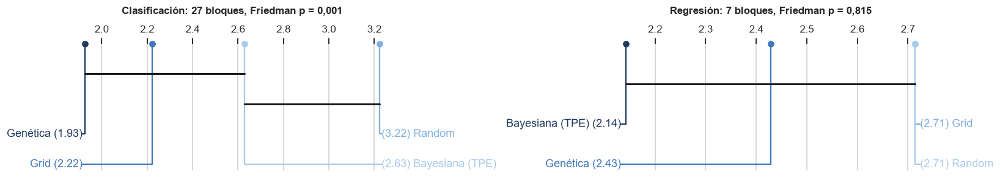
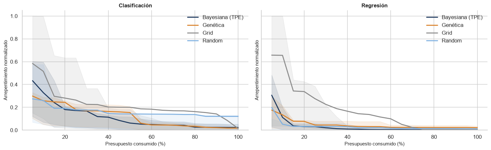
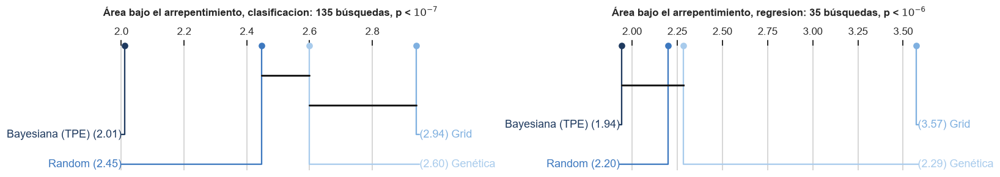
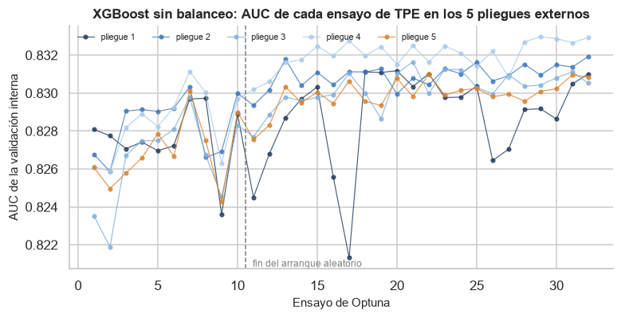
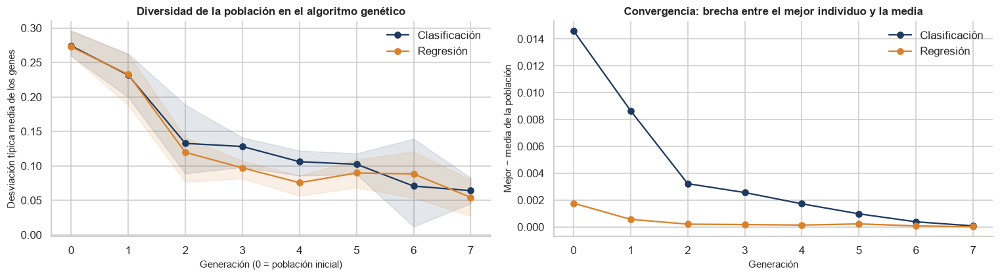

Comparación de los métodos de optimización#
La guía (§3.4) pide comparar los cuatro métodos de búsqueda de hiperparámetros por la métrica del bucle externo, el tiempo total y por evaluación, el número de evaluaciones y las curvas anytime, y aportar evidencia cuantitativa de si la optimización bayesiana y la genética rinden más por unidad de presupuesto. Esta página responde con los registros de la tabla maestra: cada corrida guarda, para cada pliegue externo, la traza del mejor puntaje interno tras cada evaluación, el historial de Optuna y, en el genético, la diversidad de la población por generación.
Diseño de la comparación. Dentro de cada modelo los cuatro métodos reciben el mismo presupuesto: tantas configuraciones como tiene la rejilla de Grid Search de ese modelo (entre 30 y 48). Cada configuración se evalúa con la misma validación interna de 3 pliegues dentro de cada uno de los 5 pliegues externos, de modo que las diferencias se deben solo a qué configuraciones elige cada método y en qué orden. Un bloque es una pareja modelo × balanceo: los cuatro métodos se comparan dentro del bloque y los bloques hacen de repeticiones. El análisis usa las 140 corridas de la guía, que se ejecutaron en serie y con el equipo dedicado; las 20 del modelo nuevo siguen el mismo diseño, pero compartieron el equipo con otros trabajos y sus tiempos no son comparables.
import sys
import warnings
from pathlib import Path
RAIZ = Path.cwd().parent
sys.path.insert(0, str(RAIZ))
warnings.filterwarnings('ignore')
import matplotlib.pyplot as plt
import numpy as np
import pandas as pd
from IPython.display import Markdown, display
from src import analisis, graficos
from src import estadistica as est
from src.formato import dec, ent, enumerar, p_valor, pct
graficos.estilo()
pd.set_option('display.float_format', lambda v: f'{v:,.4f}')
tabla = analisis.cargar_tabla()
tabla = tabla[tabla['modelo'] != 'ebm'] # las 140 corridas de la guía
ok = tabla[tabla['estado'] == 'ok']
print(f'corridas de la guía: {len(tabla)} · entrenadas: {len(ok)} · '
f'no aplican: {(tabla["estado"] == "no_aplica").sum()}')
print(ok.groupby(['tarea', 'optimizador']).size().unstack())
corridas de la guía: 140 · entrenadas: 136 · no aplican: 4
optimizador bayesiana genetica grid random
tarea
clasificacion 27 27 27 27
regresion 7 7 7 7
Resumen por método#
Para cada tarea, el rango medio ordena los cuatro métodos dentro de cada bloque por la métrica del bucle externo (1 = mejor; los empates reparten el rango) y las victorias cuentan en cuántos bloques fue el mejor. El tiempo por evaluación es el tiempo de búsqueda entre el número de configuraciones evaluadas, y el optimismo es la diferencia entre el mejor puntaje de la validación interna y el del bucle externo.
resumen = analisis.resumen_optimizadores(tabla)
resumen
| corridas | rango_medio | victorias | metrica_media | evaluaciones | s_por_evaluacion | min_por_corrida | horas_totales | optimismo | ||
|---|---|---|---|---|---|---|---|---|---|---|
| tarea | optimizador | |||||||||
| clasificacion | grid | 27 | 2.2222 | 12 | 0.7759 | 170.3704 | 2.6095 | 9.6200 | 4.3290 | -0.0013 |
| random | 27 | 3.2222 | 4 | 0.7740 | 170.3704 | 2.4555 | 9.0566 | 4.0755 | -0.0009 | |
| bayesiana | 27 | 2.6296 | 2 | 0.7757 | 170.3704 | 4.4804 | 16.0614 | 7.2276 | -0.0010 | |
| genetica | 27 | 1.9259 | 15 | 0.7760 | 170.3704 | 4.2678 | 15.3162 | 6.8923 | -0.0012 | |
| regresion | grid | 7 | 2.7143 | 2 | 0.0609 | 170.0000 | 2.4319 | 8.3754 | 0.9771 | -0.0001 |
| random | 7 | 2.7143 | 0 | 0.0609 | 170.0000 | 2.0550 | 7.1805 | 0.8377 | -0.0001 | |
| bayesiana | 7 | 2.1429 | 2 | 0.0609 | 170.0000 | 2.9382 | 10.5272 | 1.2282 | -0.0001 | |
| genetica | 7 | 2.4286 | 3 | 0.0609 | 170.0000 | 3.3694 | 11.6464 | 1.3587 | -0.0001 |
def fila(tarea, opt, col):
return resumen.loc[(tarea, opt), col]
ratio_t = {t: (fila(t, 'bayesiana', 's_por_evaluacion') + fila(t, 'genetica', 's_por_evaluacion'))
/ (fila(t, 'grid', 's_por_evaluacion') + fila(t, 'random', 's_por_evaluacion'))
for t in ('clasificacion', 'regresion')}
horas = resumen['horas_totales'].sum()
display(Markdown(f"""
Las {ent(len(ok))} corridas entrenadas consumieron {dec(horas, 1)} horas de cómputo. Con el mismo
número de evaluaciones, la bayesiana y la genética tardaron **{dec(ratio_t['clasificacion'], 1)} veces
más por evaluación** que Grid y Random en clasificación y {dec(ratio_t['regresion'], 1)} veces más en
regresión. La causa no es el coste del método (proponer un punto con TPE o generar una población
cuesta milisegundos) sino el paralelismo: Grid y Random conocen de antemano todas sus
configuraciones y `scikit-learn` reparte configuraciones × pliegues entre los 6 núcleos, mientras
que la bayesiana y la genética necesitan el resultado de una evaluación para proponer la siguiente
(o la generación siguiente), así que solo paralelizan los 3 pliegues internos de cada evaluación.
"""))
Las 136 corridas entrenadas consumieron 26,9 horas de cómputo. Con el mismo
número de evaluaciones, la bayesiana y la genética tardaron 1,7 veces
más por evaluación que Grid y Random en clasificación y 1,4 veces más en
regresión. La causa no es el coste del método (proponer un punto con TPE o generar una población
cuesta milisegundos) sino el paralelismo: Grid y Random conocen de antemano todas sus
configuraciones y scikit-learn reparte configuraciones × pliegues entre los 6 núcleos, mientras
que la bayesiana y la genética necesitan el resultado de una evaluación para proponer la siguiente
(o la generación siguiente), así que solo paralelizan los 3 pliegues internos de cada evaluación.
¿Encuentran configuraciones distintas? Prueba de Friedman sobre la métrica externa#
Si los métodos fueran equivalentes, su rango dentro de cada bloque sería aleatorio. La prueba de Friedman contrasta esa hipótesis con los rangos de los bloques completos, y el diagrama de diferencia crítica de Nemenyi muestra qué parejas de métodos se distinguen (las unidas por una barra no difieren al 5 %).
friedman_metrica = {t: est.friedman(analisis.matriz_optimizadores(tabla, t)) for t in ('clasificacion', 'regresion')}
fig, ax = plt.subplots(1, 2, figsize=(15, 2.8))
for a, (t, r) in zip(ax, friedman_metrica.items()):
graficos.diagrama_cd(r, ax=a, etiquetas=graficos.NOMBRE_OPTIMIZADOR,
titulo=f'{graficos.NOMBRE_TAREA[t]}: {r["n_bloques"]} bloques, Friedman {p_valor(r["p"], grafico=True)}')
plt.tight_layout()
plt.show()
pd.DataFrame({t: {'bloques': r['n_bloques'], 'chi2': r['chi2'], 'p': r['p'],
'F Iman-Davenport': r['F'], 'p Iman-Davenport': r['p_iman_davenport'],
'diferencia crítica': r['dc']} for t, r in friedman_metrica.items()}).T

| bloques | chi2 | p | F Iman-Davenport | p Iman-Davenport | diferencia crítica | |
|---|---|---|---|---|---|---|
| clasificacion | 27.0000 | 15.6591 | 0.0013 | 6.2310 | 0.0008 | 0.9027 |
| regresion | 7.0000 | 0.9429 | 0.8151 | 0.2821 | 0.8377 | 1.7728 |
dif_grid = analisis.diferencias_con_grid(tabla)
dif_grid
| bloques | media | minimo | maximo | supera_a_grid | p_wilcoxon | ||
|---|---|---|---|---|---|---|---|
| tarea | optimizador | ||||||
| clasificacion | random | 27 | -0.0019 | -0.0168 | 0.0019 | 0.2593 | 0.0039 |
| bayesiana | 27 | -0.0002 | -0.0028 | 0.0008 | 0.4074 | 0.1864 | |
| genetica | 27 | 0.0001 | -0.0020 | 0.0023 | 0.4444 | 0.4140 | |
| regresion | random | 7 | 0.0000 | -0.0001 | 0.0003 | 0.4286 | 1.0000 |
| bayesiana | 7 | 0.0000 | -0.0000 | 0.0003 | 0.7143 | 0.6875 | |
| genetica | 7 | 0.0000 | -0.0002 | 0.0004 | 0.5714 | 0.9375 |
fc, fr = friedman_metrica['clasificacion'], friedman_metrica['regresion']
rc = fc['rangos_medios']
d_random = dif_grid.loc[('clasificacion', 'random')]
display(Markdown(f"""
En **clasificación** los métodos no son equivalentes (Friedman {p_valor(fc['p'])}, Iman-Davenport
{p_valor(fc['p_iman_davenport'])}, {fc['n_bloques']} bloques). El orden por rango medio es
{enumerar(f"{graficos.NOMBRE_CORTO_OPTIMIZADOR[o]} ({dec(v, 2)})" for o, v in rc.items())}. La diferencia que
sostiene la prueba es la de **Random**, que queda por debajo de Grid en {pct(1 - d_random['supera_a_grid'], 0)}
de los bloques, con una pérdida media de {dec(-d_random['media'], 4)} de AUC y hasta {dec(-d_random['minimo'], 4)}
en el peor bloque (Wilcoxon {p_valor(d_random['p_wilcoxon'])}). La bayesiana y la genética terminan
en el mismo nivel que Grid: sus diferencias medias son de {dec(dif_grid.loc[('clasificacion', 'bayesiana'), 'media'], 5, True)}
y {dec(dif_grid.loc[('clasificacion', 'genetica'), 'media'], 5, True)} de AUC, sin significación.
En **regresión** no hay diferencias (Friedman {p_valor(fr['p'])}, {fr['n_bloques']} bloques): con
uno a tres hiperparámetros por modelo, cualquier método que recorra el espacio con 30 puntos llega
al mismo óptimo.
La métrica final, por tanto, no separa a la bayesiana y la genética de Grid. Lo que sí las separa es
**cuánto presupuesto necesitan** para llegar a ese nivel, que es lo que miden las curvas *anytime*.
"""))
En clasificación los métodos no son equivalentes (Friedman p = 0,001, Iman-Davenport p < 0,001, 27 bloques). El orden por rango medio es genética (1,93), Grid (2,22), bayesiana (2,63) y Random (3,22). La diferencia que sostiene la prueba es la de Random, que queda por debajo de Grid en 74 % de los bloques, con una pérdida media de 0,0019 de AUC y hasta 0,0168 en el peor bloque (Wilcoxon p = 0,004). La bayesiana y la genética terminan en el mismo nivel que Grid: sus diferencias medias son de −0,00022 y +0,00006 de AUC, sin significación.
En regresión no hay diferencias (Friedman p = 0,815, 7 bloques): con uno a tres hiperparámetros por modelo, cualquier método que recorra el espacio con 30 puntos llega al mismo óptimo.
La métrica final, por tanto, no separa a la bayesiana y la genética de Grid. Lo que sí las separa es cuánto presupuesto necesitan para llegar a ese nivel, que es lo que miden las curvas anytime.
Rendimiento por unidad de presupuesto: curvas anytime#
Para cada bloque y cada pliegue externo se toma como referencia el mejor puntaje interno que alcanzó cualquiera de los cuatro métodos y como punto de partida el peor primer puntaje. El arrepentimiento normalizado tras t evaluaciones es la fracción de esa brecha que el método todavía no ha cerrado: vale 1 al principio y 0 cuando el método ya encontró lo mejor que se encontró. Así se pueden promediar modelos con métricas en escalas distintas. El área bajo la curva resume la eficiencia en una cifra (menor es mejor) y se contrasta con Friedman sobre las búsquedas (bloque × pliegue).
anytime = {t: analisis.curvas_anytime(tabla, t) for t in ('clasificacion', 'regresion')}
fig, ax = plt.subplots(1, 2, figsize=(14, 4.4), sharey=True)
for a, (t, (curvas, _)) in zip(ax, anytime.items()):
graficos.curvas_anytime(curvas, ax=a, titulo=graficos.NOMBRE_TAREA[t])
plt.tight_layout()
plt.show()

filas = []
friedman_area = {}
for t, (_, por_busqueda) in anytime.items():
m = por_busqueda.pivot_table(index=['modelo', 'balanceo', 'pliegue'], columns='optimizador', values='area')
friedman_area[t] = est.friedman(m[analisis.OPTIMIZADORES], mayor_es_mejor=False)
g = por_busqueda.groupby('optimizador')
resumen_area = pd.DataFrame({
'área media': g['area'].mean(), 'arrepentimiento final': g['final'].mean(),
'evaluaciones hasta el 95 %': g['evals_al_95'].mean(),
'búsquedas que llegan al 95 %': g['evals_al_95'].apply(lambda s: s.notna().mean()),
'rango medio del área': friedman_area[t]['rangos_medios']})
filas.append(resumen_area.reindex(analisis.OPTIMIZADORES).assign(tarea=t).set_index('tarea', append=True)
.reorder_levels([1, 0]))
eficiencia = pd.concat(filas)
eficiencia
| área media | arrepentimiento final | evaluaciones hasta el 95 % | búsquedas que llegan al 95 % | rango medio del área | ||
|---|---|---|---|---|---|---|
| tarea | optimizador | |||||
| clasificacion | grid | 0.2342 | 0.0146 | 14.2195 | 0.9111 | 2.9407 |
| random | 0.1707 | 0.1205 | 7.1912 | 0.5037 | 2.4481 | |
| bayesiana | 0.1226 | 0.0234 | 10.2900 | 0.7407 | 2.0111 | |
| genetica | 0.1365 | 0.0176 | 13.0690 | 0.8593 | 2.6000 | |
| regresion | grid | 0.1811 | 0.0065 | 9.9143 | 1.0000 | 3.5714 |
| random | 0.0409 | 0.0117 | 7.4062 | 0.9143 | 2.2000 | |
| bayesiana | 0.0377 | 0.0029 | 5.4571 | 1.0000 | 1.9429 | |
| genetica | 0.0575 | 0.0214 | 7.4000 | 0.8571 | 2.2857 |
fig, ax = plt.subplots(1, 2, figsize=(15, 2.8))
for a, (t, r) in zip(ax, friedman_area.items()):
graficos.diagrama_cd(r, ax=a, etiquetas=graficos.NOMBRE_OPTIMIZADOR,
titulo=f'Área bajo el arrepentimiento, {t}: {r["n_bloques"]} búsquedas, {p_valor(r["p"], grafico=True)}')
plt.tight_layout()
plt.show()

fa_c, fa_r = friedman_area['clasificacion'], friedman_area['regresion']
pn_c = fa_c['p_nemenyi']
e_c = eficiencia.loc['clasificacion']
e_r = eficiencia.loc['regresion']
display(Markdown(f"""
Aquí sí hay un ganador claro. La **optimización bayesiana** es el método más eficiente por unidad de
presupuesto en las dos tareas: tiene el menor rango medio del área bajo el arrepentimiento
({dec(fa_c['rangos_medios']['bayesiana'], 2)} en clasificación y {dec(fa_r['rangos_medios']['bayesiana'], 2)} en
regresión; Friedman {p_valor(fa_c['p'])} y {p_valor(fa_r['p'])}). En clasificación cierra el 95 % de la
brecha en {dec(e_c.loc['bayesiana', 'evaluaciones hasta el 95 %'], 1)} evaluaciones de media, frente a
{dec(e_c.loc['grid', 'evaluaciones hasta el 95 %'], 1)} de Grid, y Nemenyi la separa de Grid
({p_valor(pn_c.loc['bayesiana', 'grid'])}), de Random ({p_valor(pn_c.loc['bayesiana', 'random'])}) y de la
genética ({p_valor(pn_c.loc['bayesiana', 'genetica'])}).
La **genética** es más eficiente que Grid en regresión (Nemenyi {p_valor(fa_r['p_nemenyi'].loc['genetica', 'grid'])})
pero no en clasificación ({p_valor(pn_c.loc['genetica', 'grid'])}): su población inicial es aleatoria y
necesita varias generaciones para concentrarse, y con presupuestos de 30 a 48 evaluaciones solo
alcanza 5 a 7 generaciones. A cambio, es la que termina con mejor rango en la métrica externa de
clasificación: explora más y, cuando el presupuesto se agota, sus mejores configuraciones
generalizan igual o mejor que las de Grid.
**Random** arranca rápido (las primeras evaluaciones ya cubren el espacio entero), pero solo
{pct(e_c.loc['random', 'búsquedas que llegan al 95 %'], 0)} de sus búsquedas de clasificación llegan a cerrar el 95 % de la
brecha y termina con el mayor arrepentimiento final ({dec(e_c.loc['random', 'arrepentimiento final'], 3)}).
**Grid** es el menos eficiente: recorre la rejilla en un orden fijo que no aprende de lo evaluado.
"""))
Aquí sí hay un ganador claro. La optimización bayesiana es el método más eficiente por unidad de presupuesto en las dos tareas: tiene el menor rango medio del área bajo el arrepentimiento (2,01 en clasificación y 1,94 en regresión; Friedman p < 10⁻⁷ y p < 10⁻⁶). En clasificación cierra el 95 % de la brecha en 10,3 evaluaciones de media, frente a 14,2 de Grid, y Nemenyi la separa de Grid (p < 10⁻⁷), de Random (p = 0,028) y de la genética (p = 0,001).
La genética es más eficiente que Grid en regresión (Nemenyi p < 0,001) pero no en clasificación (p = 0,132): su población inicial es aleatoria y necesita varias generaciones para concentrarse, y con presupuestos de 30 a 48 evaluaciones solo alcanza 5 a 7 generaciones. A cambio, es la que termina con mejor rango en la métrica externa de clasificación: explora más y, cuando el presupuesto se agota, sus mejores configuraciones generalizan igual o mejor que las de Grid.
Random arranca rápido (las primeras evaluaciones ya cubren el espacio entero), pero solo 50 % de sus búsquedas de clasificación llegan a cerrar el 95 % de la brecha y termina con el mayor arrepentimiento final (0,120). Grid es el menos eficiente: recorre la rejilla en un orden fijo que no aprende de lo evaluado.
Dentro de la optimización bayesiana: arranque aleatorio y explotación del modelo#
TPE empieza con un tercio del presupuesto (como máximo 10 ensayos) de puntos aleatorios para estimar sus dos densidades, ℓ(x) de las configuraciones buenas y g(x) de las malas, y a partir de ahí propone el punto que maximiza ℓ(x)/g(x), que equivale a maximizar la mejora esperada. Si el modelo aprende algo útil, los ensayos posteriores al arranque deben puntuar mejor que los del arranque.
filas = []
for _, f in ok[ok['optimizador'] == 'bayesiana'].iterrows():
for d in f['detalles']:
h = np.asarray(d['historial'], dtype=float)
k = d['n_startup_trials']
h = h[np.isfinite(h)]
if len(h) <= k:
continue
corte = np.quantile(h, 0.75)
filas.append({'tarea': f['tarea'], 'modelo': f['modelo'],
'arranque en el cuartil superior': np.mean(h[:k] >= corte),
'guiados en el cuartil superior': np.mean(h[k:] >= corte),
'mediana arranque': np.median(h[:k]), 'mediana guiados': np.median(h[k:])})
tpe = pd.DataFrame(filas)
tpe_resumen = tpe.groupby('tarea')[['arranque en el cuartil superior', 'guiados en el cuartil superior']].mean()
tpe_resumen
| arranque en el cuartil superior | guiados en el cuartil superior | |
|---|---|---|
| tarea | ||
| clasificacion | 0.0533 | 0.3486 |
| regresion | 0.1000 | 0.3274 |
fig, ax = plt.subplots(figsize=(8, 3.6))
ejemplo = ok[(ok['optimizador'] == 'bayesiana') & (ok['modelo'] == 'xgboost') & (ok['tarea'] == 'clasificacion')
& (ok['balanceo'] == 'ninguno')].iloc[0]
for i, d in enumerate(ejemplo['detalles']):
h = np.asarray(d['historial'], dtype=float)
ax.plot(np.arange(1, len(h) + 1), h, marker='o', ms=3, lw=0.8, alpha=0.8, label=f'pliegue {i + 1}')
ax.axvline(ejemplo['detalles'][0]['n_startup_trials'] + 0.5, color='grey', ls='--', lw=1)
ax.text(ejemplo['detalles'][0]['n_startup_trials'] + 0.8, ax.get_ylim()[0], ' fin del arranque aleatorio',
va='bottom', fontsize=8, color='grey')
ax.set_xlabel('Ensayo de Optuna')
ax.set_ylabel('AUC de la validación interna')
ax.set_title('XGBoost sin balanceo: AUC de cada ensayo de TPE en los 5 pliegues externos')
ax.legend(frameon=False, fontsize=7, ncol=5)
plt.show()

tc = tpe_resumen.loc['clasificacion']
display(Markdown(f"""
En clasificación, {pct(tc['guiados en el cuartil superior'], 0)} de los ensayos que propone TPE después del
arranque caen en el cuartil superior de su propio estudio, frente a {pct(tc['arranque en el cuartil superior'], 0)}
de los ensayos aleatorios del arranque. Si el modelo no aprendiera nada, las dos cifras serían
parecidas: el sustituto concentra la búsqueda en la región buena, que es la fuente de la ventaja
*anytime* de la sección anterior.
"""))
En clasificación, 35 % de los ensayos que propone TPE después del arranque caen en el cuartil superior de su propio estudio, frente a 5 % de los ensayos aleatorios del arranque. Si el modelo no aprendiera nada, las dos cifras serían parecidas: el sustituto concentra la búsqueda en la región buena, que es la fuente de la ventaja anytime de la sección anterior.
Dentro del algoritmo genético: diversidad y convergencia#
El genético usa selección por torneo de tamaño 3, cruce uniforme (probabilidad de intercambio 0,5 por gen, aplicado con probabilidad 0,6), mutación gaussiana con desviación 0,15 sobre genes codificados en [0, 1] (probabilidad 1/n por gen, aplicada con probabilidad 0,3) y elitismo: el mejor individuo se reinserta en cada generación. La población y el número de generaciones se derivan del presupuesto (con 30 evaluaciones, 7 individuos y 6 generaciones), y una caché de genomas evita gastar presupuesto en configuraciones repetidas. La guía pide registrar la diversidad por generación: aquí es la desviación típica de cada gen (codificado en [0, 1]) a través de la población, promediada sobre los genes; vale 0 cuando todos los individuos son idénticos.
div = analisis.diversidad_genetica(tabla)
fig, ax = plt.subplots(1, 2, figsize=(14, 4))
graficos.diversidad_genetica(div, ax=ax[0])
conv = div.groupby(['tarea', 'generacion'])[['mejor', 'media']].mean()
for t, color in (('clasificacion', graficos.AZUL), ('regresion', '#d9822b')):
g = div[div['tarea'] == t].copy()
g['brecha'] = g['mejor'] - g['media']
b = g.groupby('generacion')['brecha'].mean()
ax[1].plot(b.index, b.values, marker='o', color=color, label=graficos.NOMBRE_TAREA[t])
ax[1].set_xlabel('Generación')
ax[1].set_ylabel('Mejor − media de la población')
ax[1].set_title('Convergencia: brecha entre el mejor individuo y la media')
ax[1].legend(frameon=False)
plt.tight_layout()
plt.show()
d_ini = div[div['generacion'] == 0]['diversidad'].mean()
d_fin = div.groupby(['tarea', 'modelo', 'balanceo', 'pliegue'])['diversidad'].last().mean()
display(Markdown(f"""
La diversidad cae de {dec(d_ini, 3)} en la población inicial a {dec(d_fin, 3)} en la última generación:
la población converge hacia la región de las mejores configuraciones sin colapsar del todo, porque la
mutación sigue introduciendo variación. La brecha entre el mejor individuo y la media se cierra al
mismo ritmo, señal de que el elitismo y el torneo están arrastrando a toda la población, no solo
conservando al mejor.
"""))

La diversidad cae de 0,274 en la población inicial a 0,078 en la última generación: la población converge hacia la región de las mejores configuraciones sin colapsar del todo, porque la mutación sigue introduciendo variación. La brecha entre el mejor individuo y la media se cierra al mismo ritmo, señal de que el elitismo y el torneo están arrastrando a toda la población, no solo conservando al mejor.
Optimismo de selección#
El mejor puntaje de la validación interna es una estimación sesgada al alza, porque es el máximo de muchas evaluaciones ruidosas; por eso la guía obliga a reportar la métrica del bucle externo. La diferencia entre ambos mide ese sesgo.
opt = ok.groupby(['tarea', 'optimizador'])['optimismo_seleccion'].agg(['mean', 'min', 'max']).reindex(
analisis.OPTIMIZADORES, level='optimizador')
opt
| mean | min | max | ||
|---|---|---|---|---|
| tarea | optimizador | |||
| clasificacion | grid | -0.0013 | -0.0084 | 0.0022 |
| random | -0.0009 | -0.0084 | 0.0025 | |
| bayesiana | -0.0010 | -0.0084 | 0.0023 | |
| genetica | -0.0012 | -0.0084 | 0.0027 | |
| regresion | grid | -0.0001 | -0.0003 | -0.0000 |
| random | -0.0001 | -0.0002 | -0.0000 | |
| bayesiana | -0.0001 | -0.0002 | -0.0000 | |
| genetica | -0.0001 | -0.0002 | -0.0000 |
oc = ok[ok['tarea'] == 'clasificacion']['optimismo_seleccion']
media_opt = opt.loc['clasificacion', 'mean']
adaptativos_mas_optimistas = max(media_opt['bayesiana'], media_opt['genetica']) > media_opt['grid'] + 0.0005
n_train = int(ok['n_train'].iloc[0])
display(Markdown(f"""
El optimismo sale **{'negativo' if oc.mean() < 0 else 'positivo'}** en promedio (media {dec(oc.mean(), 4, True)} de AUC
en clasificación){': la validación interna *subestima* el desempeño externo' if oc.mean() < 0 else ''}. Hay dos
fuerzas opuestas. El máximo de 30 a 48 evaluaciones sesga al alza, pero cada modelo interno se
entrena con dos tercios del pliegue externo (unas {ent(n_train * 4 / 5 * 2 / 3)} filas) y el del bucle
externo con el pliegue completo (unas {ent(n_train * 4 / 5)}): con curvas de aprendizaje que todavía
suben, el efecto del tamaño {'domina' if oc.mean() < 0 else 'no alcanza a compensar el de la selección'}.
{'Los métodos adaptativos, que buscan el máximo con más insistencia, muestran más optimismo que Grid ('
+ dec(media_opt['bayesiana'], 4, True) + ' la bayesiana y ' + dec(media_opt['genetica'], 4, True) + ' la genética, frente a '
+ dec(media_opt['grid'], 4, True) + ').' if adaptativos_mas_optimistas else
'Los métodos adaptativos, que buscan el máximo con más insistencia, no muestran más optimismo que Grid ('
+ dec(media_opt['bayesiana'], 4, True) + ' la bayesiana y ' + dec(media_opt['genetica'], 4, True) + ' la genética, frente a '
+ dec(media_opt['grid'], 4, True) + '): su mejor puntaje interno no está sobreajustado a los pliegues internos.'}
"""))
El optimismo sale negativo en promedio (media −0,0011 de AUC en clasificación): la validación interna subestima el desempeño externo. Hay dos fuerzas opuestas. El máximo de 30 a 48 evaluaciones sesga al alza, pero cada modelo interno se entrena con dos tercios del pliegue externo (unas 20.788 filas) y el del bucle externo con el pliegue completo (unas 31.182): con curvas de aprendizaje que todavía suben, el efecto del tamaño domina. Los métodos adaptativos, que buscan el máximo con más insistencia, no muestran más optimismo que Grid (−0,0010 la bayesiana y −0,0012 la genética, frente a −0,0013): su mejor puntaje interno no está sobreajustado a los pliegues internos.
Conclusión#
display(Markdown(f"""
- Con el mismo número de evaluaciones, **la optimización bayesiana es la que mejor aprovecha el
presupuesto**: llega antes al nivel final en las dos tareas, con diferencias significativas frente
a Grid y Random. Es la respuesta cuantitativa que pide la guía.
- **La métrica final apenas distingue a los métodos.** Bayesiana, genética y Grid terminan dentro
de una fracción de milésima de AUC; solo Random queda por debajo de forma consistente. Con
espacios de 1 a 7 hiperparámetros y 30 a 48 evaluaciones, el presupuesto alcanza para que los
métodos sistemáticos encuentren la meseta del óptimo.
- **En tiempo de reloj la ventaja se invierte**: la bayesiana y la genética son secuenciales y
tardaron {dec(ratio_t['clasificacion'], 1)} veces más por evaluación en este equipo de 6 núcleos. Con más
núcleos, o con evaluaciones caras que ya usan todos los núcleos por sí mismas (Random Forest,
la EBM), la ventaja por evaluación se convierte en ventaja de tiempo.
- La multi-fidelidad aplicada a Random Forest (100 árboles en la búsqueda y 300 en el modelo final)
y a la EBM (2 y 8 bolsas) se valida en la sección de cómputo.
"""))
Con el mismo número de evaluaciones, la optimización bayesiana es la que mejor aprovecha el presupuesto: llega antes al nivel final en las dos tareas, con diferencias significativas frente a Grid y Random. Es la respuesta cuantitativa que pide la guía.
La métrica final apenas distingue a los métodos. Bayesiana, genética y Grid terminan dentro de una fracción de milésima de AUC; solo Random queda por debajo de forma consistente. Con espacios de 1 a 7 hiperparámetros y 30 a 48 evaluaciones, el presupuesto alcanza para que los métodos sistemáticos encuentren la meseta del óptimo.
En tiempo de reloj la ventaja se invierte: la bayesiana y la genética son secuenciales y tardaron 1,7 veces más por evaluación en este equipo de 6 núcleos. Con más núcleos, o con evaluaciones caras que ya usan todos los núcleos por sí mismas (Random Forest, la EBM), la ventaja por evaluación se convierte en ventaja de tiempo.
La multi-fidelidad aplicada a Random Forest (100 árboles en la búsqueda y 300 en el modelo final) y a la EBM (2 y 8 bolsas) se valida en la sección de cómputo.